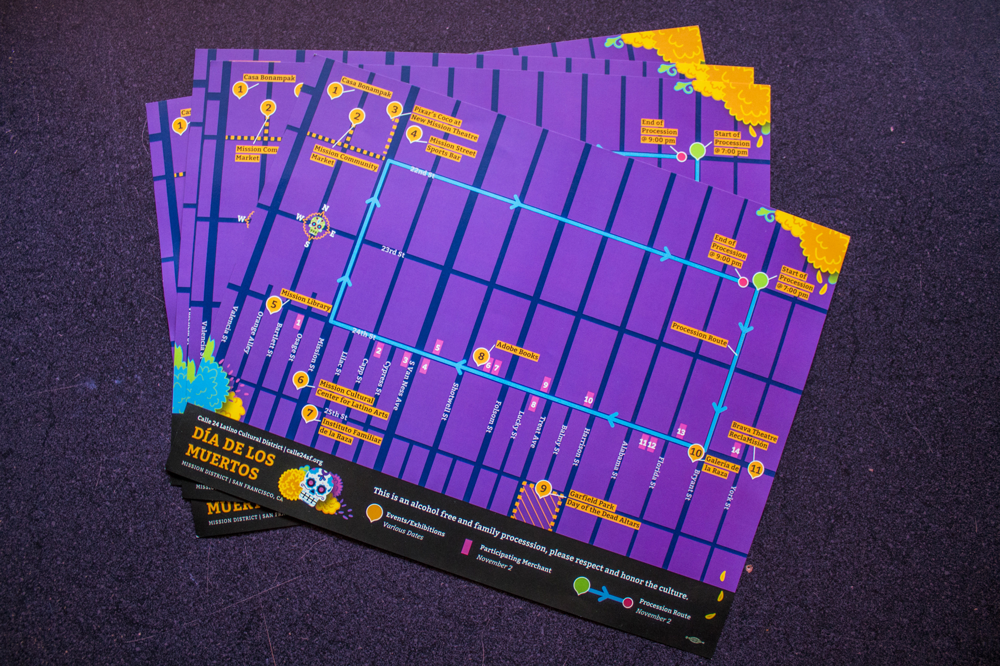

CALLE 24 LATINO
CULTURAL DISTRICT
Print, Illustration
Calle 24 is a non-profit organized of long time residents, merchants, service providers and art organizations in San Francisco’s Historic Mission District. They establish priorities and a governance structure in concern with the quality of life issues in the community.
DÍA DE LOS MUERTOS
Día de los Muertos (Day of the Dead) is a Mexican holiday celebrated throughout Mexico. Being Mexican American, I was excited and honored for the opportunity to create a map/flyer for the 36th Annual San Francisco Day Of The Dead Ritual Procession and neighboring events.

Map of the Day Of The Dead Ritual Procession
Events for the Día de los Muertos in the Latino Cultural District
Map showcased online in Calle 24's website
×